研钟 App 考研实测问题与美观性优化报告
以一名法学考研考生的完整使用路径实测：注册登录、三步首次问卷、AI 备考面谈、计划生成、番茄专注、统计与设置。共记录 1 项阻塞性缺陷、7 项功能问题、7 项页面美观性问题；其中 AI 备考面谈被"档案未填"误判拦截，而拦截提示又不提供任何跳转入口，用户被锁在"被要求去填档案、却找不到档案在哪"的死循环里，直接掐断"生成计划"这条主链路，是当前最需要先修的一项。
01结论概览
应用的基础体验是完整的：注册登录、三步问卷、番茄钟、学霸模式、深色模式都能正常进入并交互，视觉完成度在同类考研工具里属于中上。问题集中在一处逻辑断点和一批"数据已填但界面不认"的空态——用户按提示做完了该做的事，界面却仍然把他当成新用户。
AI 备考面谈在首次问卷已完整填写的前提下仍固定回复"得先在「备考档案」里填好考期、科目和每周能学的时段"，导致计划无法生成；其下游连锁反应是「计划」页长期停在"还没有计划"、「今日」页停在"今日待办 0/0"、「统计」页全为 0。修好这一处，三处空态大概率同步消失。
实测覆盖范围
| 模块 | 覆盖内容 | 结果 |
|---|---|---|
| 安装与启动 | Debug 包安装、冷启动、首启欢迎弹窗 | 正常 |
| 注册 / 登录 | 注册校验、登录、登录态网关、服务器地址入口 | 基本正常，1 处一致性问题 |
| 首次问卷 | 三步问卷、科目新增、周空闲格子、课表上传入口 | 科目清单与备考类型不匹配（F3）、周空闲格子错位（A7） |
| AI 备考面谈 | 规划师首轮回复、输入与发送 | 阻塞 |
| 计划 | 计划生成、待确认调整单、本地 468 天计划兜底 | 未生成，停在空态 |
| 专注 | 番茄钟/正计时/倒计时、暂停、结束、科目归属 | 正常 |
| 学霸模式 | 开关、标准/严格等级、悬浮窗与拦截权限引导、白名单 | 正常 |
| 统计 / 复盘 | 小结范围切换、今日概览、科目投入占比、三档复盘入口 | 数值全 0，缺解释 |
| 我的 / 设置 | 学习档案、备考档案、科目管理、主题切换、关于 | 正常，1 处版本不一致 |
02阻塞性缺陷
P0-1 · AI 备考面谈被"档案未填"误判拦截，计划主链路断裂 P0 阻塞
AI 面谈是「计划」页在无计划状态下唯一的主按钮（"和 AI 聊 5 分钟，制定计划"）。实测中，在首次问卷已完整提交之后进入面谈，规划师的第一条回复固定为：
得先在「备考档案」里填好考期,并确认课表空闲时间,我才好把计划排准。填完回来我们接着聊。
此后无论输入什么内容，流程都无法推进，用户被锁在这一句话上。对照「我的 → 备考档案」页面可以看到：考试日期已为 2026-12-20，科目已选 数学 / 专业课 408 / 英语 / 政治，周一至周日的空闲时段格子也已点选——档案实际上是填好的，但面谈仍然认为它为空。
复测确认（1.0.0-m2）：在最新构建上重新进入面谈，回复文案与拦截行为完全一致，顶部三枚事实标签仍全部停在"待确认"。该缺陷在 m2 上依然存在，不是旧包残留。
更关键的是用户接下来无路可走：这句提示是纯文本——服务端在档案缺失时返回的 options 是空数组，客户端把它渲染成一条普通气泡，既没有按钮也没有链接，文案里也没写明档案在哪个页面（入口实际在「我的」Tab 内）。用户只能反复打字追问，然后反复收到同一句话，形成功能性死循环。该次生缺陷记为 F4。
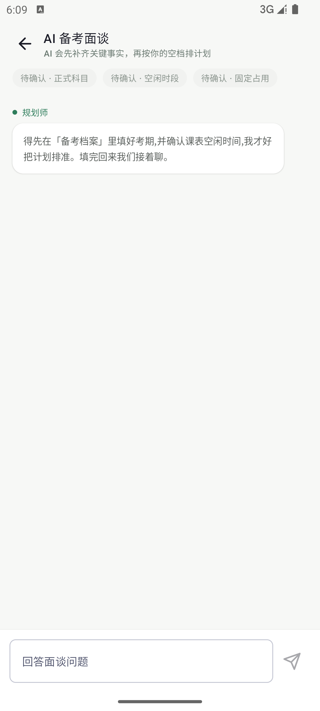
规划师只回一句"先去填备考档案"，对话无法继续。
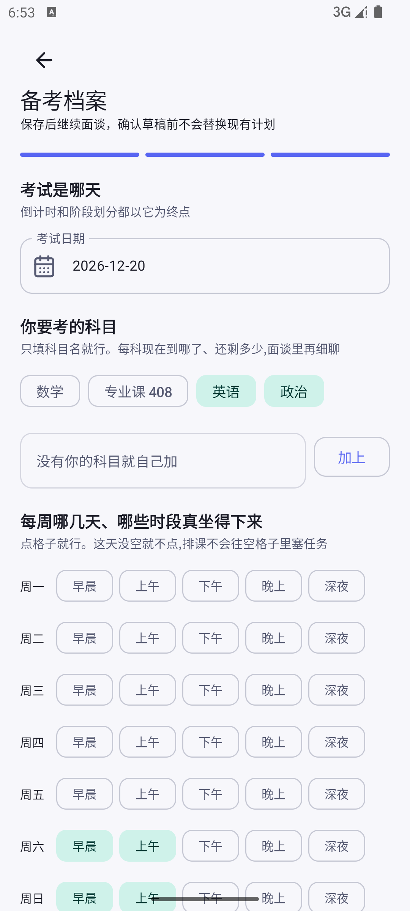
考期、科目、周一到周日空闲格子都已就位。
复现步骤
- 新装应用，完成注册并登录。
- 完成三步首次问卷：考期 2026-12-20，科目数学/专业课 408/英语/政治，每周空闲点选上午与下午。
- 进入「计划」页，点击"和 AI 聊 5 分钟，制定计划"。
- 观察规划师首条回复——固定为"得先在「备考档案」里填好……"。
- 尝试输入回答并发送，流程无任何推进。
根因分析（代码层）
服务端 planning 模块在面谈入口以 profile.brief.availability 与 profile.brief.examSubjects 是否为空做前置校验；而首次问卷提交上来的字段没有映射进 brief 结构，导致该判断恒为"未填"，用户永远迈不过这道门槛。
校验本身是合理的防呆，问题在于校验字段与写入字段不是同一份，且失败时只返回一句纯文本，没有给出可点击的补救入口。
这一处断点会连带造成下游三处空态：计划页"还没有计划"、今日页"今日待办 0/0"、统计页全部为 0。对第一次上手的考生而言，这几乎等同于"这个 App 的核心功能用不了"。
03功能问题清单
以下问题按严重度排列。F1–F4 与 P0-1 同源——问卷采集的数据与后续流程脱节，修好 P0-1 后应一并复测；F5–F7 属于一致性与工程规范问题。
| 编号 | 严重度 | 模块 | 现象 | 影响 | 建议 |
|---|---|---|---|---|---|
| F1 | 高 | 计划 | 保存档案后计划页仍停在"还没有计划"，无生成中状态、无失败重试 | 用户无法判断档案是否保存成功，只能反复点击 | 提交后展示生成中/进度，失败时给出可重试按钮与失败原因 |
| F2 | 高 | 今日 | "今日待办 0/0"与"今天没有安排？"长期空态，无任务投影 | 首页失去每日入口价值，用户看不到今天该做什么 | 服务端计划缺失时，用内置 468 天计划兜底投影到今日 |
| F3 | 高 | 首次问卷 | 第一步可选「考研 / 专升本 / 考公 / 法考 / 其他」五种备考类型，但第二、三步的科目清单完全不受所选类型影响：新用户一律落到硬编码的"政治 / 英语 / 数学 / 专业课"考研模板，法考、考公的科目一个都不出现，只能手动逐个输入 | 选"法考"的考生看到的是"数学"；必须自己敲完民法、刑法、法理学等全部门类，而问卷本身还提示"出现陌生名词最容易劝退" | 按 targetType 提供对应科目预设（法考 → 民法/刑法/行政法/理论法/商经法/三国法/刑诉/民诉；考公 → 行测/申论），本地已有科目优先，通用模板仅作兜底 |
| F4 | 高 | AI 面谈 | 面谈提示"得先在「备考档案」里填好考期"时，服务端返回的 options 为空数组，客户端只渲染成一条纯文本气泡——没有按钮、没有链接、不说明档案在哪个页面；同时客户端只在进入面谈页那一刻用 profile.isComplete 判定一次，进入对话后没有任何路径退回"填写备考档案"阶段 |
用户被指向一个自己找不到的地方（档案入口在「我的」Tab），打字追问只会再次收到同一句模板话，形成功能性死循环——这比 P0-1 本身更致命，因为用户连自救的出口都没有 | ① 服务端在档案未就绪时返回结构化信号（如 needProfile: true），客户端据此切回已有的 NEED_PROFILE 阶段渲染"填写备考档案"按钮；② 最低成本：文案里写明路径"我的 → 备考档案"，并把该句做成可点击跳转；③ 把该提示加入 options，由客户端识别为导航指令 |
| F5 | 中 | 我的 · 关于 | 关于页显示版本 1.0.0-m1，与当前代码版本 1.0.0-m2 不一致 | 测试包落后一个版本，部分已修问题可能被重复上报 | 测试统一安装最新 Debug 包，并在报告页标注构建号 |
| F6 | 低 | 统计 | "今日"范围下净专注、番茄数、连续打卡全为 0，未说明为何为 0 | 用户容易误判为数据丢失 | 空态补充规则说明，例如"少于 1 分钟的番茄不计入统计" |
| F7 | 低 | 登录 / 注册 | 页面底部仍保留"服务器地址（可选）"入口，与"使用内置默认地址"的既定策略不一致 | 普通考生误改地址后将无法登录，且不易恢复 | 仅在调试构建中暴露该入口，或改为长按标题唤出 |
计划页停在"还没有计划"空态。
今日页待办计数 0/0，无任何任务。
F1、F2 是"前置动作已完成、界面却仍停在初始空态"。而 F4 是用户在这条链路上真正撞上的墙——下图左是 1.0.0-m2 上的复测画面：面谈要求"去备考档案填写"，整屏却只有一个纯文本气泡，没有任何按钮或链接。F3 则更靠上游，问题出在问卷本身（下图右）。
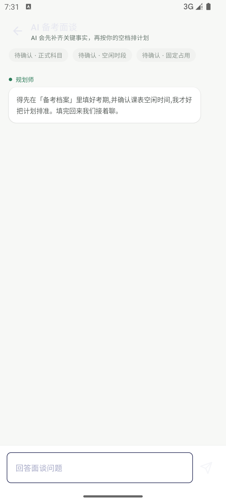
整屏只有纯文本气泡与输入框，没有"去填档案"按钮。
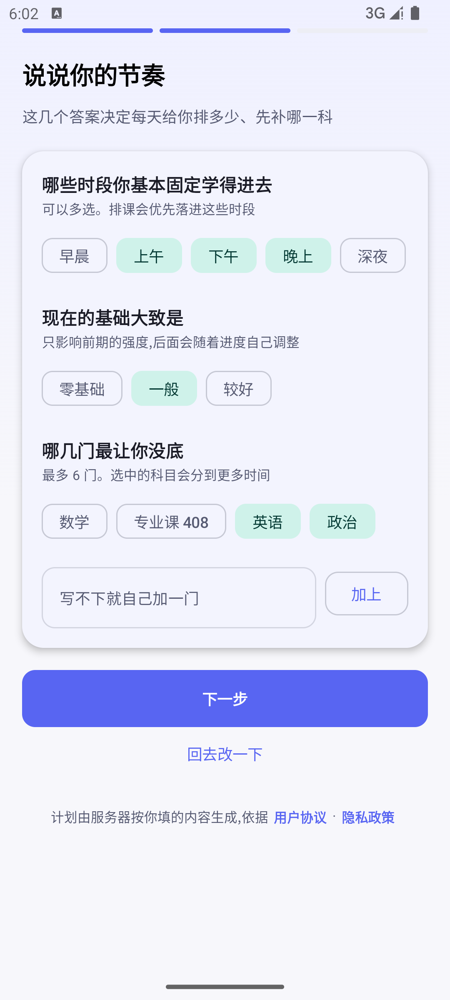
无论选考研还是法考，候选科目都是同一套考研模板。
F5–F7 属于一致性与工程规范层面，不影响功能本身，但会干扰测试判断与真实使用。
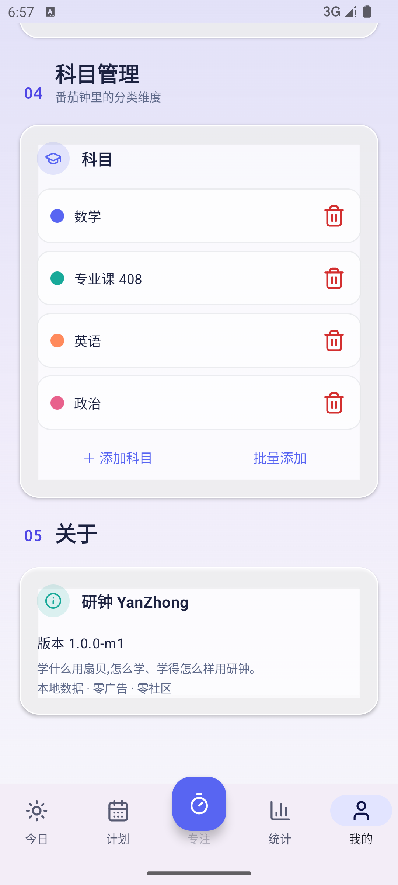
关于模块显示版本 1.0.0-m1。
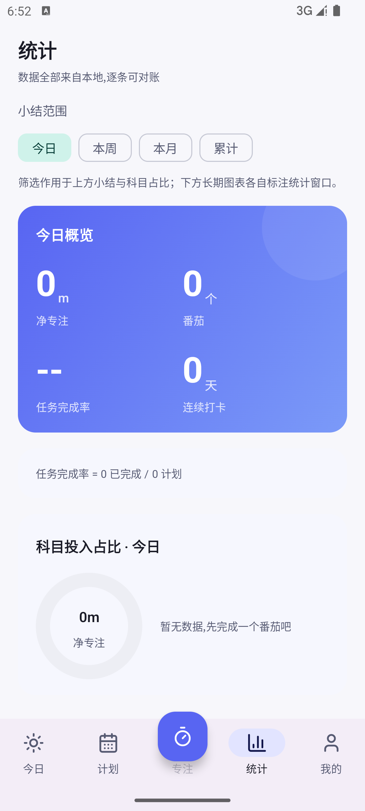
统计各项为 0，仅有一句"先完成一个番茄吧"。
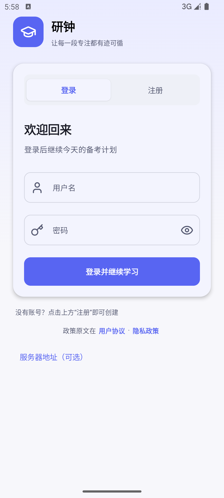
登录页底部仍暴露"服务器地址（可选）"。
04页面美观性问题清单
整体视觉方向是成立的：浅色底 + 靛紫主色 + 圆角卡片，深色模式也做了完整适配。问题主要出在信息密度失衡（该紧凑的地方太空、该精简的地方太长）和空态缺少引导。
| 编号 | 页面 | 问题描述 | 优化建议 |
|---|---|---|---|
| A1 | AI 面谈 | 对话区大片留白，AI 气泡几乎占满整行，视觉重心松散 | 气泡限宽至约 78%，补头像与时间戳；空态给一句引导文案 |
| A2 | AI 面谈 | 顶部三枚"待确认"标签全为灰色，状态语义不清，看不出进度 | 沿用问卷页的进度标签：已确认显绿并带勾，未确认显灰并标注"待确认" |
| A3 | 学霸模式 | "悬浮窗拦截""拦截权限"说明为 3–4 行小字，阅读负担偏重 | 收敛为一行摘要 + "查看详情"折叠展开 |
| A4 | 备考档案 | 周空闲格子最底一行被底部导航遮挡，需继续滚动才能点选周日 | 底部预留安全间距，或改为"先选星期、再选时段"的两段式 |
| A5 | 深色 · 今日 | 橙红"新番茄·直接专注"卡片在深色底上饱和度高，与靛紫主色形成冲突 | 深色模式下降低该卡饱和度，或改用主题色派生的柔和强调色 |
| A6 | 我的 | 四张指标卡全为 0，缺少空态引导，显得"什么都没发生" | 加一句引导，例如"完成第一个番茄后，这里会亮起来" |
| A7 | 首次问卷 · 第三步 | 每个星期的 5 个时段按钮（早晨/上午/下午/晚上/深夜）在手机宽度下一行放不下，"深夜"被迫换行，导致星期标签（周一…周日）与对应时段行错位；点选后的绿色高亮与标签也对不上，用户难以确认自己选的是星期几 | 改为每个星期固定一行、时段按钮等宽压缩或横向滑动；或将"深夜"并入"晚上"合并为 4 个时段；确保星期标签与其时段行垂直居中对齐 |
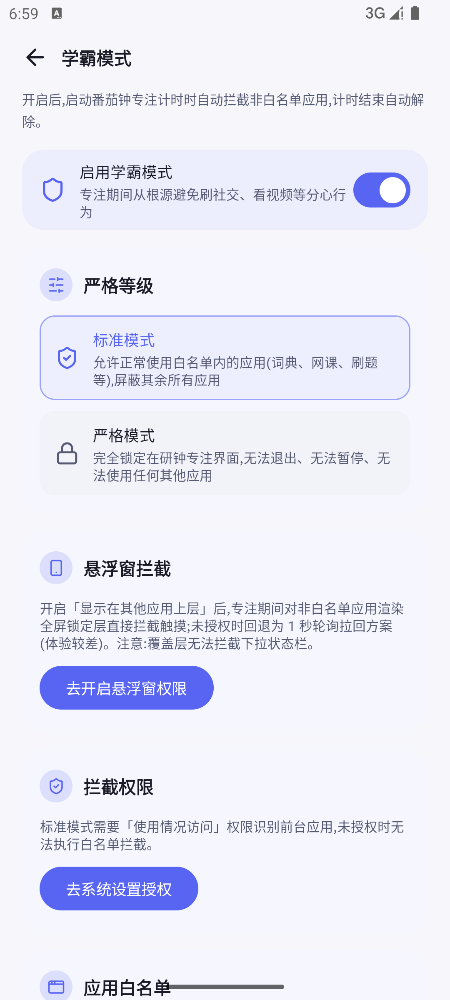
说明文字偏长，正文密度过高。
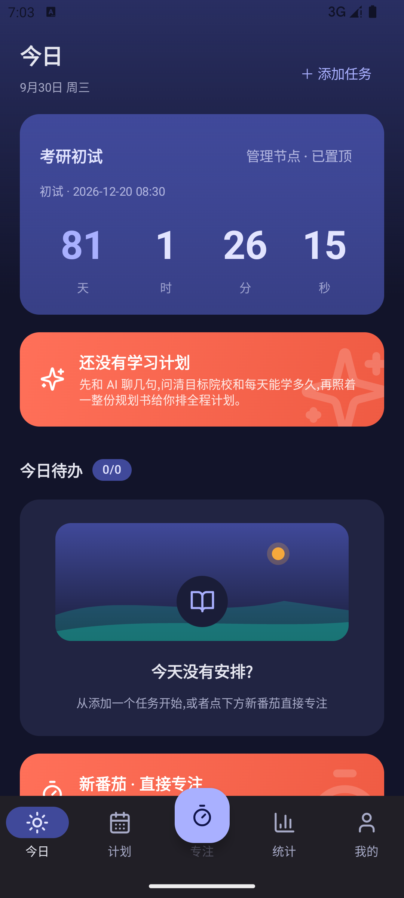
深色底上橙红卡片饱和度偏高。
A1、A2 属于面谈页的布局问题，A3–A5 是密度与配色问题。下面这一组是本次补入的 A7：首次问卷第三步的周空闲格子，它同时影响美观与输入准确性。
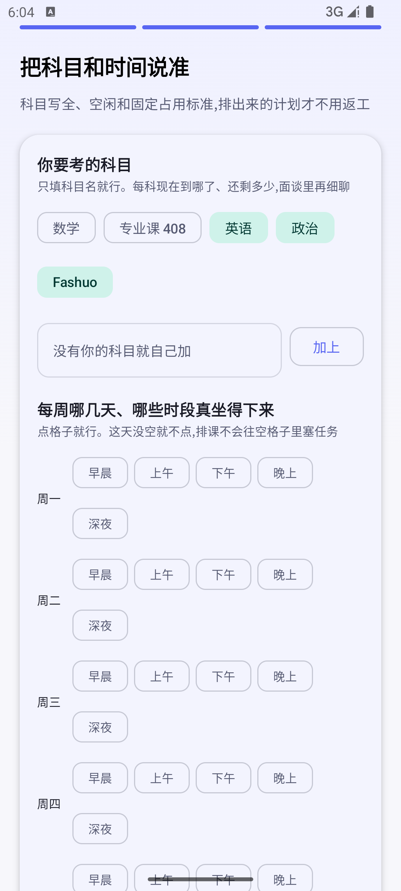
周一至周四的标签都落在两行时段按钮之间，"深夜"被挤到第二行。
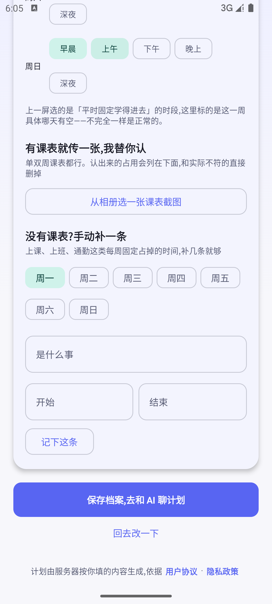
绿色高亮的时段与左侧星期标签对不上，难以确认选中的是哪一天。
A6 则是空态表达问题。作为对照，下面两张截图展示了同一应用里做得较好的页面，可以作为后续调整的密度基准。
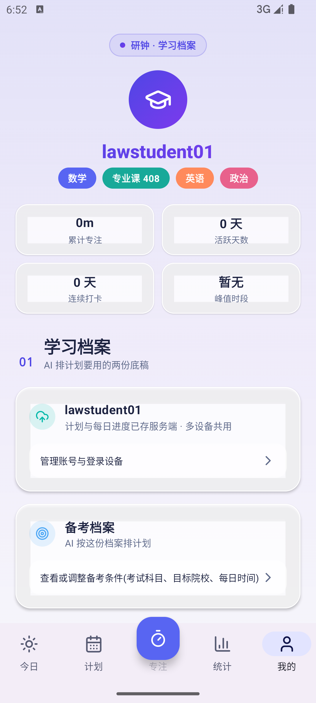
指标卡全 0，无空态引导。
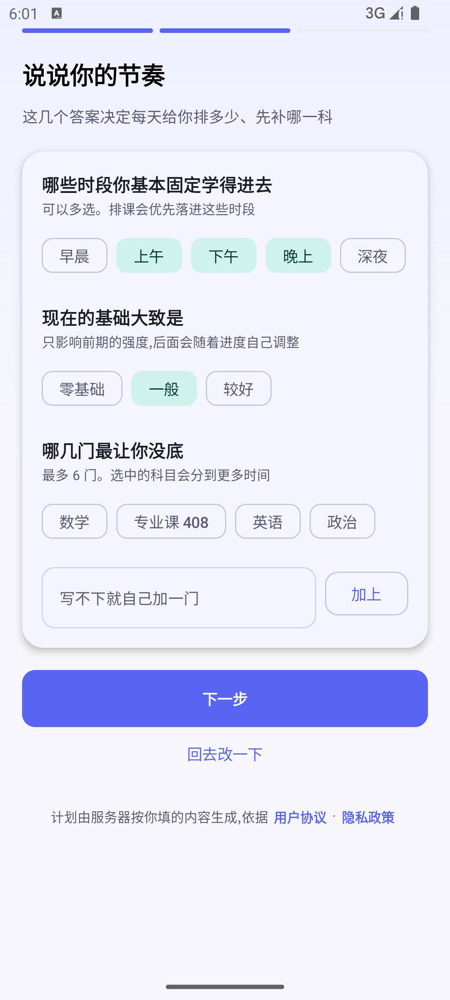
分步清晰、选项排布规整，值得作为其他页面的密度基准。
05改进建议
按"先通链路、再补空态、最后打磨视觉"的顺序推进，前三项建议同批修复并一起复测。
R1先修 P0-1：统一问卷与档案的字段契约
- 理由
- 面谈被误判拦截是当前唯一阻断核心流程的问题，且它同时制造了计划、今日、统计三处空态。
- 预期收益
- 一次修复可让"问卷 → 面谈 → 生成计划 → 今日任务"整条链路跑通，首页与统计随之有数据。
- 下一步
- 把首次问卷写入的考期、科目、周空闲字段直接映射进
profile.brief；校验失败时返回可区分错误码，客户端渲染成可点击的"去补档案"按钮，而不是一句纯文本。 - 附带修复（F3）
- 问卷科目清单改为按
targetType提供预设——法考 → 民法/刑法/行政法/理论法/商经法/三国法/刑诉/民诉，考公 → 行测/申论，专升本 → 按省考纲；本地已有科目优先，通用模板仅作兜底。目前选"法考"看到的仍是"政治/英语/数学/专业课"。 - 配套修复（F4）
- 给"去备考档案"这句提示补上出口：服务端在档案未就绪时返回
needProfile: true，客户端复用已有的NEED_PROFILE阶段渲染"填写备考档案"按钮（该按钮代码已存在，只是进入对话后再也不会被触发）。最低成本方案是把文案改成"我的 → 备考档案"并做成可点击跳转。
R2为所有空态补上"下一步做什么"
- 理由
- 计划页、今日页、统计页、我的页都存在全 0 或空态，且多数只描述现状、不给出路。
- 预期收益
- 新用户不会把"还没开始"误读成"功能坏了"，降低首次使用的挫败感。
- 下一步
- 统一空态组件：一句状态说明 + 一句原因 + 一个主按钮（生成计划 / 直接开番茄 / 去补档案）。统计页额外说明"少于 1 分钟的番茄不计入"。
R3收紧面谈页与学霸模式页的信息密度
- 理由
- 面谈页该聚焦却大片留白，学霸模式页该精简却堆了长段说明，两端都不理想。
- 预期收益
- 面谈页更像对话、学霸模式页更像设置，两者的可读性同时提升。
- 下一步
- 面谈气泡限宽并补头像/时间；顶部状态标签改为带勾的进度样式；学霸模式的权限说明改为摘要 + 折叠详情。
R4统一深色模式下的强调色规则
- 理由
- 深色底上高饱和的橙红卡片与靛紫主色互相争夺注意力。
- 预期收益
- 深色模式视觉更整体，强调色仍能突出"立即开始专注"这一个动作。
- 下一步
- 为深色模式定义一档低饱和的强调色，并检查"直接专注""学习计划提醒"等橙色卡片的一致性。
R5收口调试入口与版本标注
- 理由
- 登录页保留"服务器地址（可选）"、关于页版本与代码版本不一致，都会给测试与真实用户带来噪声。
- 预期收益
- 测试结论可信、普通用户不会误改地址导致登录失败。
- 下一步
- 服务器地址入口仅在调试构建暴露；发版脚本确保
versionName与关于页展示同源；测试统一使用最新 Debug 包。
06实测表现良好的部分
为避免只列问题造成偏差，以下是实测中确认可用、且体验在线的部分。
- 番茄专注流程
- 番茄钟 / 正计时 / 倒计时三种模式切换顺畅，专注环视觉聚焦，暂停、结束、科目归属与"结束专注"红色语义都清晰。
- 首次问卷
- 三步分步清晰，第二、三步的选项排布规整，支持自定义加科目，进度条与"回去改一下"回退都到位（科目候选清单为固定模板，见 F3）。
- 学霸模式
- 标准与严格两级分层明确，悬浮窗权限与使用情况访问权限都给了系统设置跳转入口，白名单支持按科目场景化。
- 深色模式
- 整体适配完整，卡片、分隔线、开关状态在深色下层次清楚，主题切换提供浅色 / 深色 / 跟随系统三档。
- 登录与鉴权
- 注册表单校验完整（含协议勾选拦截），登录后自动进入主界面，会话态切换稳定。
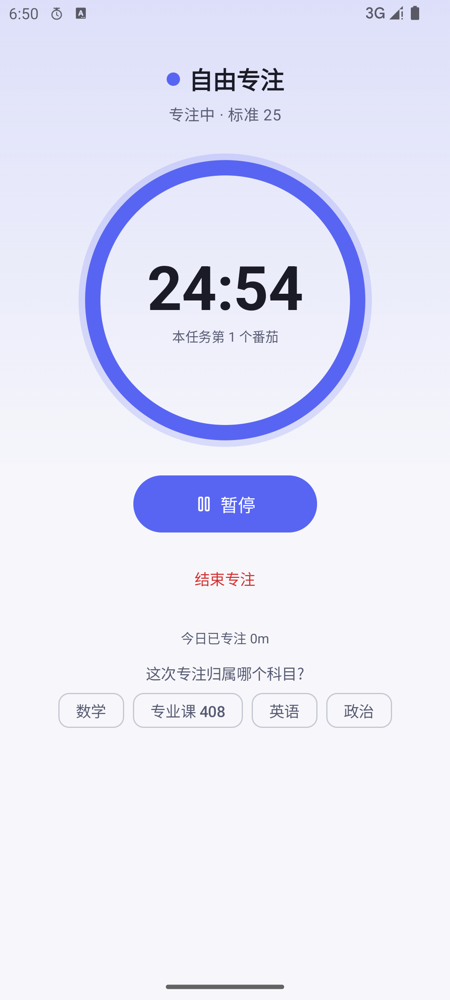
倒计时居中、操作按钮层级清晰。
直接专注入口与三档复盘卡片排布合理。